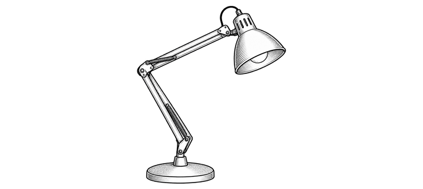

Featured work
About

Make a memorable experience. Let your brand act in a way that well exceeds users' expectations. See what we can do to help you.
What We Do
Emily Bernd & Associates
From product to all things digital

Make a memorable experience. Let your brand act in a way that well exceeds users' expectations. See what we can do to help you.
What We Do